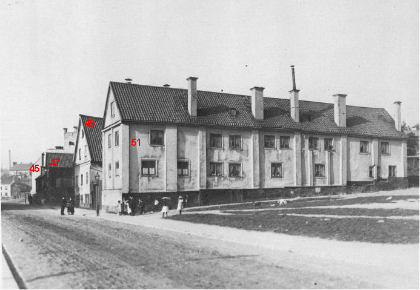
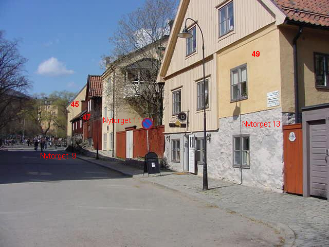

Värmdögatan (Malmgårdsvägen) norrut

Nytorget 9
Bebyggelsen är troligen uppförd någon gång under 170o-talets tre första decennier.
Nytorget 11
Huset är nyuppfört 1990 och ägs av S KB (Stockholms Kooperativa Bostadsförening).
Nytorget 13
Bebyggelsen fanns i nuvarande skick och omfattning, uppfört i olika material, redan 1747. Det stora huset ombyggdes 1972.